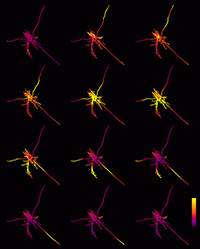

for neocortical neurons in vivo
J. Neurosci. 23: 2466-2476, 2003

Abstract
During activated states, neocortical neurons receive intense synaptic background activity, which induces large-amplitude membrane potential fluctuations and a strong conductance in the membrane. However, little is known about the integrative properties of neurons during such high-conductance states. Here we investigated the integrative properties of neocortical pyramidal neurons under in vivo conditions simulated by computational models. We show that the presence of high-conductance fluctuations induces a stochastic state in which active dendrites are fast-conducting and have a different dynamics of initiation and forward-propagation of Na+-dependent spikes. Synaptic efficacy, quantified as the probability that a synaptic input specifically evokes a somatic spike, was roughly independent of the dendritic location of the synapse. Synaptic inputs evoked precisely timed responses (milliseconds), which also showed a reduced location dependence. This scheme was found to apply for a broad range of kinetics and density distributions of voltage-dependent conductances, as well as for different dendritic morphologies. Synaptic efficacies were, however, modulable by the balance of excitation and inhibition in background activity, for all synapses at once. Thus, models predict that the intense synaptic activity in vivo can confer advantageous computational properties to neocortical neurons: they can be set to an integrative mode which is stochastic, fast-conducting, and optimized to process synaptic inputs at high temporal resolution independently of their position in the dendrites. Some of these predictions can be tested experimentally.
Complementary Information and Material
1. NEURON demo files
NEURON demo files: ZIP (19 kByte)
This package contains all the mechanisms necessary to implement the models investigated in this paper, using the NEURON simulation environment (NEURON is freely available at www.neuron.yale.edu). The mechanisms included here are the voltage-dependent Na+, K+ and Ca2+ currents, as well as synaptic (AMPA, GABAA) receptor types. Further instructions are provided in a README file, as well as comments in each file.
2. Movies
The computer animations illustrate the dynamics of spiking in soma and dendrites in a simulated neocortical layer VI pyramidal neuron. The somatodendritic distribution of membrane potential is shown by colors in three cases:
3. Journal cover page
|  | PDF (1.1 MByte) |